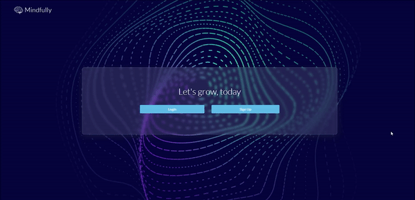
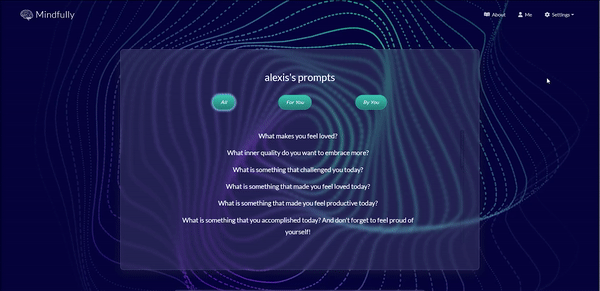

Welcome page
Implemented local session-based user authenticatoin using Passport.js and Bcrypt password hashing.
User profile

Users are greeted with their custom username and a time-dependent message. Users can use the calendar to visit previous dates and view past entries. The profile page also includes randomly generated uplifting quotes.
About page

The about page includes information on the extra special features of Mindfully designed to enhance the user experience.
Users prompts
One particular feature is the ability for users to create custom prompts to help guide their journaling process.